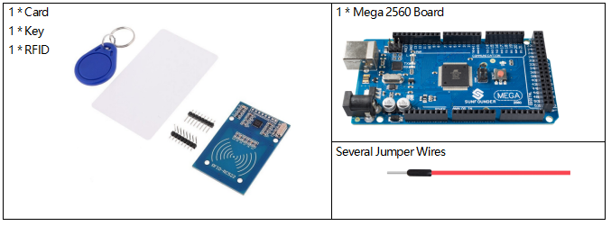

2.35 RFID-RC522-Modul¶
Überblick¶
In dieser Lektion lernen Sie, wie Sie das RFID-Modul verwenden. RFID ist eine Abkürzung für Radio Frequency Identification. Sein Arbeitsprinzip besteht darin, eine berührungslose Datenkommunikation zwischen dem Lesegerät und dem Etikett durchzuführen, um den Zweck der Identifizierung des Ziels zu erreichen. RFID hat ein breites Anwendungsspektrum. Die derzeit typischen Anwendungen sind Tierchips, Diebstahlsicherungen, Zugangskontrolle, Parkkontrolle, Automatisierung der Produktionskette und Materialmanagement.
Erforderliche Komponenten¶
Komponenteneinführung¶
Radio Frequency Identification (RFID) bezeichnet eine Technologie, bei der eine drahtlose Kommunikation zwischen einem Objekt (oder Tag) und einem Abfragegerät (oder Lesegerät) verwendet wird, um solche Objekte automatisch zu verfolgen und zu identifizieren. Die Tag-Übertragungsreichweite ist auf mehrere Meter vom Lesegerät begrenzt. Eine klare Sichtlinie zwischen Lesegerät und Etikett ist nicht unbedingt erforderlich.
Die meisten Tags enthalten mindestens eine integrierte Schaltung (IC) und eine Antenne. Der Mikrochip speichert Informationen und ist für die Verwaltung der Hochfrequenzkommunikation mit dem Lesegerät verantwortlich. Passive Tags haben keine unabhängige Energiequelle und sind auf ein externes elektromagnetisches Signal angewiesen, das vom Lesegerät bereitgestellt wird, um ihren Betrieb zu betreiben. Aktive Tags enthalten eine unabhängige Energiequelle, z. B. eine Batterie. Somit können sie eine erhöhte Verarbeitung, Übertragungsfähigkeit und Reichweite aufweisen.
MFRC522
MF RC522 ist ein hochintegrierter Lese- und Schreibkartenchip für die kontaktlose 13,56-MHz-Kommunikation. Es wurde von der NXP Company auf den Markt gebracht und ist ein berührungsloser, kostengünstiger und kleiner Niederspannungs-Kartenchip, der die beste Wahl für intelligente Instrumente und tragbare Handgeräte darstellt.
Der MF RC522 verwendet ein fortschrittliches Modulations- und Demodulationskonzept, das in allen Arten von passiven kontaktlosen Kommunikationsmethoden und -protokollen mit 13,56 MHz vollständig dargestellt wird. Darüber hinaus unterstützt es den schnellen CRYPTO1-Verschlüsselungsalgorithmus zur Überprüfung von MIFARE-Produkten.
Der MFRC522 unterstützt auch die berührungslose Hochgeschwindigkeitskommunikation der MIFARE-Serie mit einer bidirektionalen Datenübertragungsrate von bis zu 424 kbit / s. Als neues Mitglied der hochintegrierten 13,56-MHz-Lesekartenserie ist der MF RC522 dem vorhandenen MF RC500 und MF RC530 sehr ähnlich, es gibt jedoch auch große Unterschiede.
Es kommuniziert mit dem Host-Computer über die serielle Weise, die weniger Verkabelung benötigt. Sie können zwischen SPI-, I2C- und seriellem UART-Modus (ähnlich wie RS232) wählen, um die Verbindung zu reduzieren, Platz auf der Leiterplatte zu sparen (kleinere Größe) und Kosten zu senken.
Fritzing Circuit¶
In diesem Beispiel fügen wir die RFID in das Steckbrett ein. Lassen Sie die 3,3 V RFID an 3,3 V, GND an GND, RST an Pin 2, SDA an Pin 6, SCK an Pin 5, MOSI an Pin 4, MISO an Pin 3 und IRQ an Pin 7 anschließen.

Schematische Darstellung¶

Code¶
Die Codes verwenden die Bibliothek rfid1.h. Informationen zum Importieren der Bibliothek finden Sie in Teil 4 - 4.1 Hinzufügen von Bibliotheken.
Wenn Sie die Codes auf die Mega2560-Karte hochgeladen haben, können Sie Ihre RFID-Karte (geheimer Schlüssel) in die Nähe des RFID-Lesegeräts bringen. Das Modul liest die Karteninformationen und druckt sie dann auf dem seriellen Monitor aus.
Code-Analyse¶
Die Funktionen des Moduls sind in der Bibliothek rfid1.h enthalten.
#include <rfid1.h>
Bibliotheksfunktionen:
RFID1
Erstellen Sie eine neue Instanz der Klasse rfid1, die ein bestimmtes RFID-Modul darstellt, das an Ihr Arduino angeschlossen ist.
void begin(IRQ_PIN,SCK_PIN,MOSI_PIN,MISO_PIN,SDA_PIN,RST_PIN)
Pin-Konfiguration.
IRQ_PIN,SCK_PIN,MOSI_PIN,MISO_PIN: Die für die SPI-Kommunikation verwendeten Pins.
SDA_PIN: Synchroner Datenadapter.
RST_PIN: Die zum Zurücksetzen verwendeten Pins.
void init()
Initialisieren Sie die RFID.
uchar request(uchar reqMode, uchar *TagType);
Suchkarte und Lesekartentyp, und die Funktion gibt den aktuellen Lesestatus von RFID zurück und gibt MI_OK zurück, wenn dies erfolgreich ist.
reqMode: Suchmethoden. PICC_REQIDL ist definiert als 0x26 Befehlsbits (Durchsuchen Sie die Karten, die sich nicht im Ruhemodus befinden, im Antennenbereich).
*TagType: It is used to store card type, and its value can be 4byte (e.g. 0x0400).
char * readCardType(uchar *TagType)
Diese Funktion decodiert die vierstellige Hexadezimalzahl von * tagType in den jeweiligen Kartentyp und gibt eine Zeichenfolge zurück. Bei Übergabe von 0x0400 wird „MFOne-S50“ zurückgegeben.
uchar anticoll(uchar *serNum);
Verhindern Sie Konflikte und lesen Sie die Seriennummer der Karte. Die Funktion gibt den aktuellen Lesestatus von RFID zurück. Bei Erfolg wird MI_OK zurückgegeben.
* serNum: Hiermit wird die Kartenseriennummer gespeichert und die 4-Byte-Kartenseriennummer zurückgegeben. Das 5. Byte ist ein erneutes Überprüfungsbyte (z. B. meine Magnetkarten-ID ist 5AE4C955).
Phänomen Bild¶